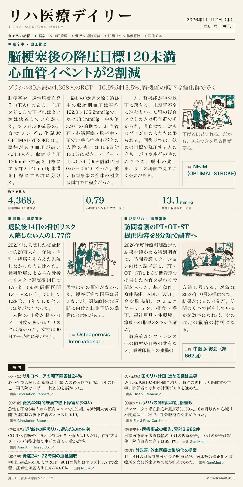
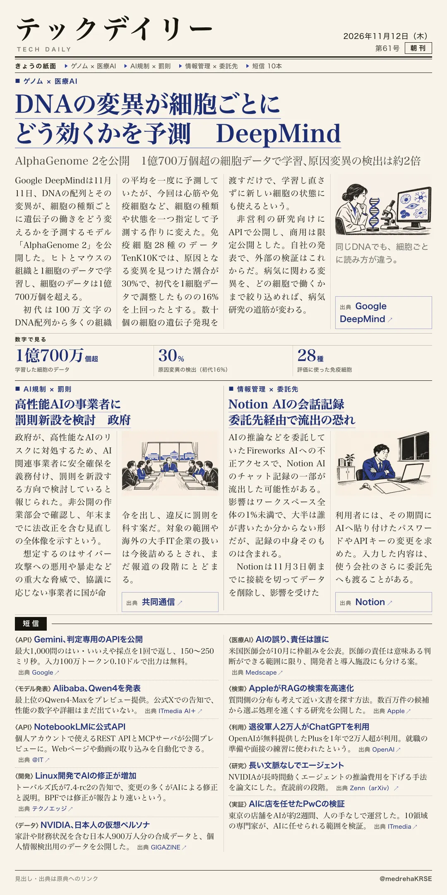

リハ医療デイリー
脳梗塞後の降圧目標120未満 心血管イベントが2割減
ブラジル30施設の4,368人のRCT 10.9%対13.5%、腎機能の低下は強化群で多く
脳梗塞・TIAの既往がある人の降圧目標を比べた。

テックデイリー
DNAの変異が細胞ごとにどう効くかを予測 DeepMind
AlphaGenome 2を公開 1億700万個超の細胞データで学習、原因変異の検出は約2倍
細胞の種類と状態を指定して予測するモデル。

ブラジル30施設の4,368人のRCT 10.9%対13.5%、腎機能の低下は強化群で多く
脳梗塞・TIAの既往がある人の降圧目標を比べた。

AlphaGenome 2を公開 1億700万個超の細胞データで学習、原因変異の検出は約2倍
細胞の種類と状態を指定して予測するモデル。
